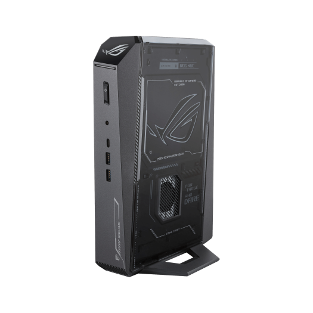
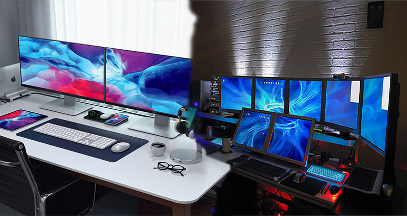

A computer is a machine that can store and process information. Most computers depend on a binary system, which uses two values, 0 and 1, to perform tasks such as storing data, executing algorithms, and displaying information. Computers come in many different types, ranging from Microcomputers to Supercomputers.
Types of Computers:
Supercomputers:
Supercomputers are composed of multiple different central processing units (CPUs) compared to traditional computers. These CPUs consist of thousands of compute nodes and memory, which use parallel computing to communicate with one another to solve problems. Traditionally, they have been used for scientific and engineering applications that require massive databases, extensive computation, or both (Kirvan & Lutkevich, 2025).

Mainframe Computers:
Mainframes are data servers designed to process up to 1 trillion web transactions daily, with the highest levels of security and reliability. These are high-performance computers that process billions of simple transactions and calculations in real time thanks to their large amounts of memory and data-processing power. These computers are critical to commercial databases, transaction servers, and applications that require high resiliency, security, and agility (Susnjara & Smalley, 2025).

Minicomputers:
Mini Computers are compact versions of a typical desktop computer; these are small enough to fit behind a monitor or tuck into a small space on your desk. Due to their size, they often use lower-power components, making them quieter and more energy-efficient compared to their full-sized counterparts. They usually have enough power for everyday tasks like web browsing, office applications, and media playback (What Is a Mini PC and Can It Handle Gaming?, 2023).

Server:
A server is a powerful computer that provides various services such as web hosting, network storage, and application processing. These are essential for businesses and organizations that need to store and manage large amounts of data or provide you with access to shared resources (What Is a Computer Server, 2023).
Workstations:
These computers are optimized for performance, reliability, and stability to handle intensive tasks such as 3D rendering, engineering simulations, and computer-aided design (CAD) software like AutoCAD. The powerful hardware ensures smooth, efficient performance when handling complex design and drafting tasks, thereby improving productivity (What Is the Workstation Computer & How Can It Benefit You?, 2023).

Microcomputers:
This type of computer operates using microchips, unlike the larger computer systems. This includes devices like laptops, smartphones, and ATMs, and it’s been in use since the early 1970s. Microcomputers are used across multiple industries, such as the maintenance of patient histories in hospitals, and are also used in conjunction with devices such as ultrasound equipment and MRIs (Microcomputer | Research Starters | EBSCO Research, 2023).
References
- GeeksforGeeks. (2025, July 23). What is Microcomputer? GeeksforGeeks. https://www.geeksforgeeks.org/computer-organization-architecture/what-is-microcomputer/
- IBM. (2024, March). Mainframe. IBM.com. https://www.ibm.com/think/topics/mainframe
- Kirvan, P., & Lutkevich, B. (2025, February 11). What is a supercomputer? WhatIs. https://www.techtarget.com/whatis/definition/supercomputer
- Microcomputer | Research Starters | EBSCO Research. (2023). EBSCO. https://www.ebsco.com/research-starters/computer-science/microcomputer
- What is a computer server. (2023, May 28). https://www.lenovo.com/ph/en/glossary/what-is-a-computer-server/
- What is a Mini PC and Can it Handle Gaming? (2023, May 28). https://www.lenovo.com/ph/en/glossary/mini-pc/
- What is the Workstation Computer & How Can It Benefit You? (2023, May 28). https://www.lenovo.com/ph/en/glossary/workstation-computers/